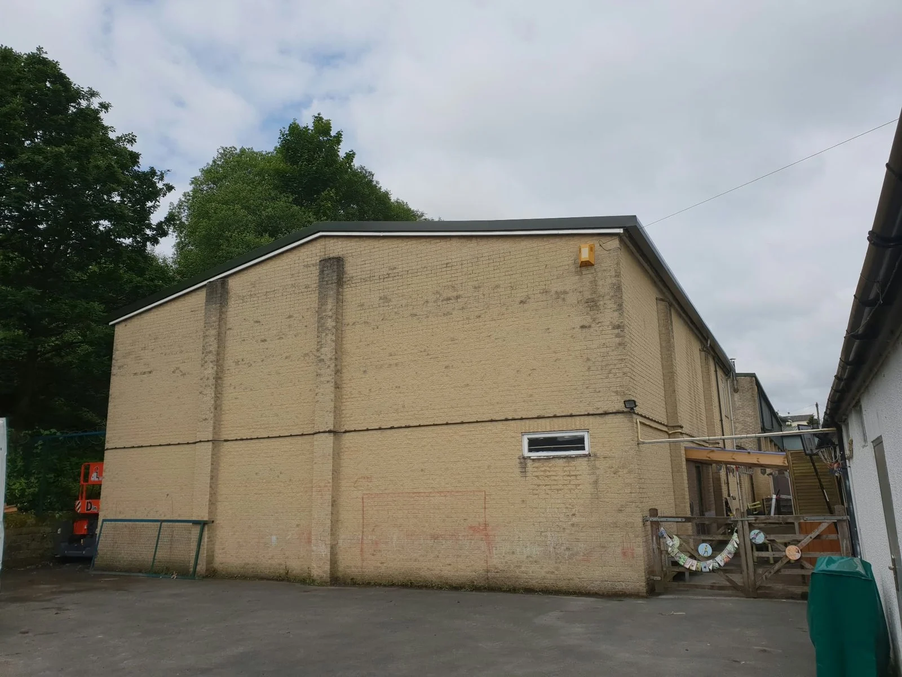

Yorkshire
New-build roofing and cladding, refurbishment, repairs and maintenance enquiries.

Areas we cover
Roofing and cladding project enquiries across Yorkshire and the North East. Send the site postcode to check project availability.
Project locations
We work across Yorkshire and the North East. The type and scale of work, the site location and the programme all help us establish whether we can assist.
New-build roofing and cladding, refurbishment, repairs and maintenance enquiries.
Roofing and building envelope enquiries across the region, subject to project availability.
Send the location and scope. We can confirm whether your enquiry falls within our current working area.
Send the postcode, project type and your proposed timing to begin the conversation.